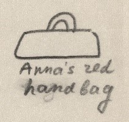
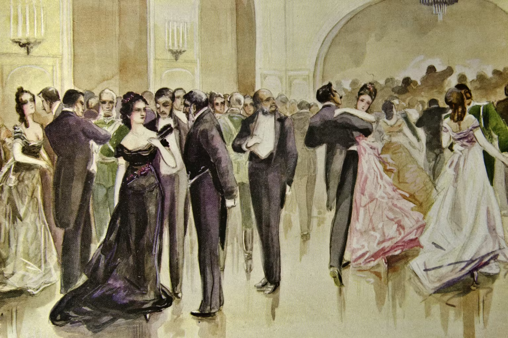

Symbolically Charged Everyday Details

The term “symbolically charged everyday details” refers to ostensibly innocuous details, such as objects, names, or other such commonplace items, which in a literary text can take on great meaning, whether symbolically articulating a story arc or foreshadowing later events in the plot.
Anna Karenina is rife with such symbolism, as Tolstoy hides deeper meaning in countless objects within his story; however, the keys to unlocking these meanings differ, falling into two categories: those that can be understood from the text alone and those that require outside knowledge. Anna’s red bag is a famous example of the former. The bag appears at two key points in the story: first, Anna’s journey back to Petersburg, and second, just before her death. We first see the bag being packed just before Anna’s journey, with Anna placing a nightcap and handkerchiefs into it. However, as Nabokov notes, the bag’s size is inconsistent; despite being described as not only tiny (“мешочек”) but also toy-like (“игрушечный”), Anna later produces from it a pillow, a book, and a paper-knife (Nabokov 114). Such inconsistent size indicates that, for Tolstoy, its importance lay not in its physical status as a vessel but in its symbolic role, which many scholars of Anna Karenina assign to represent Anna’s love or carnal desire, as the bag’s color of red is notably associated with lust and love (Goscilo 86; Armstrong 122). The bag’s appearance is also notable: although it was presumably already with Anna when she came to Moscow, the audience does not see it until Anna’s journey back to Petersburg, until after she has already met Vronsky. Hence, soon after her love for Vronsky appears in the story, so too does this red bag as a symbol of that love. The next notable appearance of Anna’s red bag comes just prior to her death by train, where it is the last thing she discards before jumping. In fact, the bag actually stops her, quite literally holds her back to life, forcing her to wait for another opening. However, Anna ultimately sheds her bag, her one connection to the world dropped, and finally falls underneath the train. Whereas the previous example required literacy and attention to details to understand, there exists another type of symbolically charged detail: that which references extra-textual information, whether historical events or other texts. Among the most famous examples inAnna Karenina is Oblonsky and Levin’s first dinner, as seen through the foods they order. Oblonsky orders, among other things, oysters, soupe printanière, turbot à la sauce Béarnaise, parmesan, and macédoine de fruits. Between these foods is mapped nearly the entire plot of the novel, with each food representing an event or theme. The first, oysters, represents sexual desire. The vegetable soup (щи), which Levin originally wanted, represents his agrarian lifestyle. In contrast, the soupe printanière (literally: spring soup), which Levin ultimately receives instead hints at the difficulties posed by foreign influence in Russia, particularly its conflict with traditional ways of life, as Levin originally wanted traditional vegetable soup (щи), but received a considerably more extravagant French dish. Further, the French name of “spring soup” matches the season when Levin returns to his estate after his rejection. Sauce Beaumarchais refers to a French playwright who represents the superficiality and performativity of society and its norms. Parmesan matches Anna’s trip to Italy, while macédoine de fruits echoes Macedonia, foreshadowing Vronsky’s eventual departure for the Russo-Turkish War. All of these rely on varying degrees of external knowledge. For example, the oysters require a knowledge of their association with sexual acts, which is not universal. Even the vegetable soup, which can be understood just by Levin’s association with agriculture, has the added layer of specification with its name meaning “spring” in French, an association only intelligible if one speaks French. The other examples more clearly convey the need for external knowledge, be it a playwright or geopolitics. As Morson explains, Anna Karenina is a prosaic novel, a novel where “Life is an everyday affair, and the total of unremarkable, daily happenings defines its quality” (Morson 28). This philosophy emphasizes the importance of everyday details, where insignificant actions take on titanic significance. Moreover, while this concept largely speaks to the literal effects of mere details, Tolstoy applies this philosophy to his writing style by imbuing certain details with significance. By hiding meaning in the everyday, inconsequential details of life, Tolstoy ensures that one who reads the novel absently, picking up only the major events, will miss the deeper meaning. In contrast, those who pay careful attention to each detail will be heartily rewarded with a deep understanding of the novel and its message.

Works Cited
- Armstrong, Judith. "Anna Karenina and the Novel of Adultery." Approaches to Teaching Tolstoy's Anna Karenina, edited by Liza Knapp and Amy Mandelker, Modern Language Association of America, 2003, pp. 117–123.
- Goscilo, Helena. "Motif-Mesh as Matrix: Body, Sexuality, Adultery, and the Woman Question." Approaches to Teaching Tolstoy's Anna Karenina, edited by Liza Knapp and Amy Mandelker, Modern Language Association of America, 2003, pp. 83–89.
- Morson, Gary Saul. Anna Karenina in Our Time. Yale University Press, 2007.
- Nabokov, Vladimir. Lectures on Russian Literature. Harcourt, 1981.